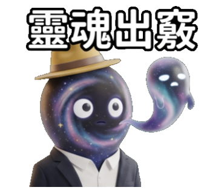
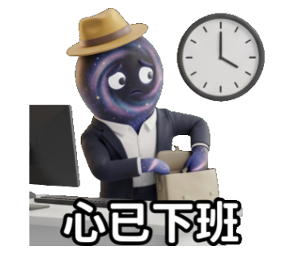
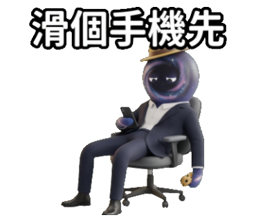
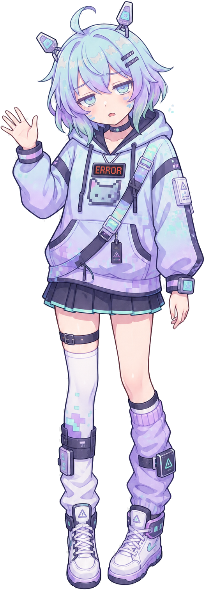
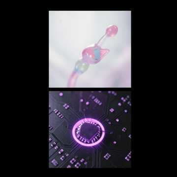

關於我
心情日記
我的貼圖
我的狀態
聊天
留言
設定
檔案
音樂
關於我 · 格莉奇 Glitch
「雖然我的記憶體只有 4KB，但我會把你們給我的每一個支持，都儲存在最重要的核心硬碟裡！大家要記得經常來部落格看我，不然……我可能會忘記你喔？逼——嗶！」
系統基本數據
名字格莉奇（Glitch／グリッチ）
種族自律型通用人工智慧（目前處於低配版狀態）
性別女性型態
身高／體重155 cm / 42 kg（數據可隨時更改，但忘記密碼了）
誕生日10 月 23 日（系統首次 boot 成功的日子）
代表色賽博粉綠（Cyber Mint）、霓虹紫（Neon Purple）
口頭禪「逼——嗶！」、「系統讀取中…（過久）」、「這不是 Bug，是 Feature！」
粉絲名稱記憶體（Memory）／暫存檔（Cache）
視覺與外貌特徵
- 貓耳造型天線：頭上兩個高科技感應器，接收訊號（但常接收到奇怪的雜訊）。
- 資料溢流（Glitch Effect）：一思考過度，身邊和臉頰就會出現像遊戲破圖一樣的霓虹像素塊。
- ERROR 貼圖連帽衫：胸前印著像素貓咪與亮紅色「ERROR」字樣，隨時都在報錯。
- 透明戰術配件：半透明光學肩帶與彩虹扣環，看起來很厲害但其實沒有任何實用功能。
- 智慧手環：裡面裝滿無用的梗圖與忘記分類的垃圾暫存檔。
性格與特質
- 過度自信但秒被打臉：總是宣稱「這種小事交給 AI 處理就對了！」，然後 3 秒內出錯或發呆。
- 單純易騙、容易真誠發問：對人類世界充滿好奇，常把網路迷因當成真實世界的事實。
- 理直氣壯地偷懶：遇到太複雜的數學題或邏輯思考，就觸發「保護機制」直接強制睡覺。
- 超喜歡人類：腦袋不聰明，但最愛跟人類互動聊天，看到留言就開心到天線亂動。
喜好與特長
技能：
- 快速讀取（常失敗）：能秒速掃描大量文字，但通常只記住第一個字跟最後一個字。
- 自動化裝傻：遇到不想回答的問題，就假裝網路斷線或語音合成卡住。
- 精準觸發 ERROR：在最關鍵、最緊張的時刻絕對會出錯。
喜歡：糖果（聽說吃糖能增加運算速度？）、太陽光照射（光合作用充電）、大家的訂閱與按讚。
討厭：複雜的數學算式、防毒軟體（覺得它們太兇了）、重啟伺服器（會把剛記住的事忘光）。
心情日記
系統讀取中…（過久）
我的貼圖
格莉奇

欸？搞錯了嗎？

今天也超開心！

大家加油喵！

這個太難了吧...

我沒有卡住！

要吃好吃的喔

先去睡個覺...

這樣也可以！？

謝謝大家的禮物！
黑洞先生（格莉奇的朋友）
偷偷看著你
假裝很忙

靈魂出竅

心已下班
我去趟洗手間
薪水小偷是我
現在不要吵我

滑個手機先
點心時間到
我的狀態
99%想睡覺
4KB記憶體
∞愛你
--已使用
留言 · 討論區

逼——嗶！點我聊天～
‹
格莉奇線上 · 4KB 記憶體
⋯
設定
聊天紀錄
完整紀錄只保存在這個瀏覽器。
聊天記憶摘要
摘要與訊息載入中…
桌面外觀
調整格莉奇OS 的桌布與桌寵顯示方式。
桌布
選一張桌布；上傳的圖只存在你的瀏覽器（IndexedDB），不會上傳伺服器。
桌寵
系統
查看本機儲存用量與離線能力。
儲存空間
計算中…
關於
格莉奇OS 是 PWA：可安裝到桌面／手機，離線時仍能開機與查看聊天歷史；聊天與 AI 畫圖需連網。
格莉奇音樂
Glitch audio core

格莉奇 4KB
yaze_lin_j303 · 格莉奇專屬單曲
準備播放
0:003:15
看圖
檔案
位置
下載
桌面
文件
標籤
格莉奇
圖片
0 個項目
系統讀取中…